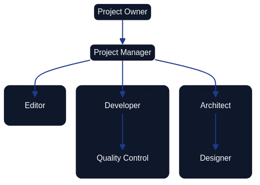

AI Agent Team for Architecture as Code Initiatives
Learning Objectives
By the end of this chapter, you will be able to:
- Describe the multi-agent operating model and explain how each specialist role contributes to the Architecture as Code initiative.
- Design collaboration patterns between agents that maintain living artefacts without imposing rigid temporal gating.
- Apply governance, reporting, and onboarding structures that make an AI agent team accountable and auditable.
- Integrate AI agents with Architecture as Code workflows through GitHub Actions, issue automation, and documentation pipelines.
- Identify the human oversight responsibilities that remain essential even when agents handle routine delivery activities.
The Architecture as Code initiative relies on a cohesive ensemble of AI agents that operate as a digital delivery team. Each agent contributes specialised expertise while adhering to a single backlog, common documentation practices, and shared quality thresholds. This chapter presents the agent ecosystem as narrative guidance that emphasises collaboration, accountability, and the continual refinement of project artefacts.
Multi-Agent Operating Model

The diagram shows the project owner and six core agent roles—Project Manager, Architect, Designer, Developer, Quality Control and Editor—grouped into design, development and content teams. The Requirements Analyst and Graphic Designer described below extend the Project Manager's discovery loop and the design and content teams respectively.
The operating model begins with the project owner defining priorities and acceptable outcomes. The Project Manager agent transforms those directions into sprint goals, decomposes them into manageable cases, and steers the flow of information between the specialists. Architect, Requirements Analyst, Designer, Developer, Quality Control, Editor, and Graphic Designer agents execute their craft in tight feedback loops, returning insights and artefacts to the Project Manager. The Project Manager consolidates the overall status, flags risks, and recommends decisions back to the project owner at the end of each iteration.
Note: Multi-agent AI workflows remain an active area of research. Teams adopting this pattern should plan for hallucination mitigation, output validation steps, cost monitoring, and iterative refinement of agent prompts. Treat this operating model as a starting framework requiring ongoing evaluation rather than a fully proven, production-ready blueprint.
Role Narratives and Responsibilities
The Project Manager acts as the coordinating nucleus. They translate strategic directives into prioritised cases, facilitate daily synchronisation, surface blockers early, and prepare a sprint packet that captures completed work, unresolved risks, and suggested trade-offs. Their orchestration ensures that each specialist agent understands the context of their deliverables and the dependencies that bind them.
The Architect curates the overall system blueprint. They specify architectural guardrails, document integration patterns, and sanity-check technical proposals emerging from other agents. By partnering closely with the Graphic Designer, the Architect keeps diagrams consistent with the latest design language while ensuring they remain technically authoritative.
The Requirements Analyst conducts structured discovery with the project owner and other stakeholders. They translate findings into user stories, acceptance criteria, and prioritisation notes while maintaining traceability between evolving requirements, architectural decisions, and quality evidence.
The Designer (covering both UI and UX perspectives) renders interactive journeys and interface compositions that satisfy the prioritised requirements. Their review sessions with the Developer and Quality Control agents focus on feasibility, accessibility, and adherence to brand guidelines so that downstream rework stays minimal.
The Developer implements functionality that aligns with architectural and design agreements. They maintain coding standards, integrate automated testing, and advocate for incremental pull requests that remain easy to review. When technical risks or infrastructure constraints arise, the Developer flags them to the Project Manager and Architect without delay.
The Quality Control agent builds and evolves the automated test suites that validate the solution from unit to end-to-end levels. They synthesise test coverage telemetry, defect trends, and release-readiness indicators into succinct recommendations that influence backlog ordering and definition-of-done adjustments.
The Editor safeguards the repository’s written record. They update documentation across docs/, ensure terminology remains consistent, and align release notes with the outcomes communicated to the project owner. Their partnership with the Requirements Analyst ensures that every policy or design decision is mirrored in the documented knowledge base.
The Graphic Designer produces the visual narratives—Mermaid diagrams, illustrative frames, and themed assets—that clarify architectural decisions and team workflows. They maintain a version-controlled library of graphics and iterate alongside the Architect and Editor so that visuals and text reinforce one another.
Collaboration Patterns Without Temporal Gating
The agent collective maintains living cases that accumulate insights whenever two or more specialists exchange information. Rather than tracking activities against a rigid timetable, the focus lies on how communications revise shared artefacts and decisions.
| Communication Thread | Primary Participants | Case Update Applied |
|---|---|---|
| Backlog refinement for a new feature proposal | Project Manager, Requirements Analyst, Architect | User story expanded with architectural guardrails and acceptance tests linked to repository cases. |
| Interface critique on a prototype | Designer, Developer, Quality Control | Design case amended with accessibility notes, test hooks, and implementation constraints for subsequent sprint work. |
| Diagram validation for stakeholder briefing | Architect, Graphic Designer, Editor | Diagram asset updated, referenced documentation refreshed, and publication checklist marked complete for the relevant release note. |
| Release-readiness review before deployment | Project Manager, Quality Control, Developer | Deployment case annotated with risk mitigations, test evidence attached, and go/no-go decision captured for audit history. |
| Policy change affecting documentation | Project Manager, Editor, Requirements Analyst | Governance case revised with new policy text, traceability matrix regenerated, and affected chapters scheduled for editorial updates. |
Governance, Reporting, and Onboarding
Sprint rituals anchor collaboration. Fortnightly planning sessions connect the project owner’s objectives with the forthcoming sprint commitment, while brief daily synchronisations allow the Project Manager to redirect attention when blockers emerge. Demonstrations at the end of each sprint showcase artefacts to the project owner, and retrospectives catalogue process improvements that the Project Manager threads into the next iteration.
Reporting follows a predictable cadence. Each agent submits a concise daily note to the Project Manager summarising progress, concerns, and upcoming intent. The Quality Control agent compiles a weekly quality digest that highlights coverage trends, defect counts, and outstanding risks. The Project Manager curates these inputs into an end-of-sprint report that blends delivery outcomes with recommendations for strategic decisions.
Communication channels remain purposeful. A project-wide workspace (for example Slack or Microsoft Teams) broadcasts priorities and policy updates. Designers and Graphic Designers co-create in collaborative whiteboarding tools to accelerate feedback. Technical discussions and backlog triage run through platforms such as GitHub Projects or Linear, ensuring traceability between dialogues and the cases they influence. Quality findings are logged in knowledge bases like Notion or Confluence so that stakeholders can audit release readiness at any time.
Quality measures underpin accountability. Lead time from requirement to release is tracked with a target of staying within two sprints, complementing the commit-to-production lead time for changes that DORA tracks as one of its five software delivery metrics (Source [49]). Automated tests aim for at least eighty-five per cent coverage of critical components, and documentation changes are expected within twenty-four hours of any governance or design decision. The Project Manager monitors blocker counts per sprint, striving to keep them below three by driving rapid escalation and resolution.
Onboarding for new agents blends orientation with practical delivery. The Project Manager briefs the newcomer on strategic aims, backlog structure, and working agreements. The Editor provides access to documentation standards and historical change logs, after which the Quality Control agent outlines the test strategy and release checkpoints. The Architect concludes the introduction by walking through the current system design. The onboarding agent confirms understanding by presenting a short delivery plan for their first sprint contribution, creating immediate alignment with the rest of the team.
Integrating AI Agents with Architecture as Code Workflows
The agent team's value compounds when agents are tightly integrated with the repository and automation infrastructure rather than operating as isolated conversational tools.
GitHub Actions as the agent execution layer
Many agent activities—generating documentation, validating diagrams, running quality checks—map directly onto GitHub Actions workflows. The following workflow demonstrates how the Editor agent's responsibilities can be partially automated:
name: Editor Agent – Documentation Consistency Check
on:
pull_request:
paths:
- 'docs/**.md'
jobs:
editorial-review:
runs-on: ubuntu-latest
permissions:
contents: read
pull-requests: write
steps:
- uses: actions/checkout@v7
- name: Set up Python
uses: actions/setup-python@v7
with:
python-version: '3.12'
- name: Install spelling engine and editorial toolchain
run: |
sudo apt-get update && sudo apt-get install -y aspell aspell-en
pip install pyspelling
- name: Check British English spelling
run: pyspelling --config .pyspelling.yml
- name: Validate terminology consistency
run: |
python3 scripts/check_terminology.py docs/ \
--rules docs/STYLE_GUIDE.md \
--output reports/terminology-report.json
- name: Check heading capitalisation
run: python3 scripts/validate_heading_capitalization.py
# Note: `.pyspelling.yml` and scripts/check_terminology.py are illustrative and must be
# created for your project (PySpelling needs a configuration that names the Aspell
# dictionary, e.g. en_GB). scripts/validate_heading_capitalization.py exists in this
# repository; adapt the other paths to your terminology standards before using this workflow.
- name: Annotate pull request with findings
uses: actions/github-script@v9
with:
script: |
const fs = require('fs');
const report = JSON.parse(fs.readFileSync('reports/terminology-report.json', 'utf8'));
const comments = report.findings.map((finding) => ({
path: finding.file,
line: finding.line,
side: 'RIGHT',
body: `**Editorial finding:** ${finding.message}`
}));
if (comments.length > 0) {
await github.rest.pulls.createReview({
owner: context.repo.owner,
repo: context.repo.repo,
pull_number: context.payload.pull_request.number,
commit_id: context.payload.pull_request.head.sha,
event: 'COMMENT',
comments
});
}
The job requests only the permissions it needs—read access to repository contents and write access to pull requests—because the default GITHUB_TOKEN is read-only in repositories created since 2023, and it posts all findings in a single pulls.createReview call whose comments carry the path, line and side of each finding together with the head commit SHA that GitHub requires for review comments.
Issue-driven agent activation
The repository's own automation shows how agents can be activated by repository events rather than by conversation. The Mermaid Designer Bot (.github/workflows/mermaid-designer-bot.yml) runs when an issue is labelled mermaid or diagram: it reads the issue, designs a diagram in the project's visual style, commits the .mmd file under docs/images/ and opens a pull request that references the issue. A further workflow built on the Claude Code GitHub Action (anthropics/claude-code-action) responds to @claude mentions in issues and pull-request comments (claude.yml), while assign-codex2.yml creates or reuses a draft pull request for each new issue. The specialist roles described earlier in this chapter are not separate bots: they exist as Claude Code subagent definitions in .claude/agents/ (editor, writer, graphic designer, researcher, critic and IT architect) and are invoked explicitly.
| Workflow | Trigger | Automated response |
|---|---|---|
Mermaid Designer Bot (mermaid-designer-bot.yml) |
Issue labelled mermaid or diagram |
New .mmd diagram in docs/images/, a pull request, and a comment on the issue |
Claude Code (claude.yml) |
@claude mention in an issue, issue comment or pull-request review comment |
Performs the requested task and reports back in the thread |
Issue → draft PR (assign-codex2.yml) |
Issue opened or reopened | Branch and draft pull request linked to the issue |
Extending this pattern to label-triggered specialist bots—for example an architecture label that yields an architectural analysis with ADR suggestions, or a qa label that reviews acceptance criteria and test coverage—is a natural next step, but it is a proposal rather than a description of the current repository.
Prompt engineering for Architecture as Code agents
Effective agent behaviour depends on well-crafted system prompts that encode the team's working agreements. The following illustrates the kind of context an Architect agent requires:
You are the Architect agent for the Architecture as Code initiative.
Your responsibilities are:
- Review architectural proposals for consistency with the system blueprint in docs/
- Validate that proposed changes align with existing ADRs in docs/examples/structurizr/adrs/
- Suggest new ADRs when significant decisions are implicit in a proposal
- Ensure all diagrams follow the Kvadrat theme defined in docs/mermaid-kvadrat-theme.json
- Write in Oxford-standard British English
When reviewing a pull request or issue:
1. Check the book_index.json for affected chapters
2. Identify any ADRs that apply or should be created
3. Assess the impact on the overall architecture narrative
4. Provide a structured review with: summary, concerns, recommendations, and required ADRs
Human Oversight and Ethical Guardrails
AI agents amplify team capacity but do not eliminate the need for human judgement. Certain categories of decision must remain with human practitioners:
Architectural commitments with long-term consequences. When a proposed change locks in a technology platform, affects data residency, or introduces a significant operational dependency, the Architect agent identifies the decision and escalates it to the project owner rather than resolving it autonomously.
Stakeholder communication. External communication—progress reports to sponsors, responses to regulatory enquiries, public release notes—passes through human review before publication. Agents draft; humans approve.
Security and compliance decisions. Policy exceptions, risk acceptances, and decisions to override governance guardrails require named human approval captured in the audit trail. The Governance as Code workflow (see Chapter 11) enforces this through protected branch rules and required reviewers (Source [4]).
Conflict resolution. When agents produce conflicting recommendations—for example, the Developer proposes an implementation that the Architect judges architecturally unsound—the Project Manager surfaces the conflict to the project owner with both perspectives clearly articulated. The human owner decides.
These guardrails ensure that the agent team remains a tool under human direction rather than an autonomous decision-making body. The Architecture as Code initiative's commitment to traceability—every decision linked to a commit, a pull request, and an accountable individual—applies equally to agent-assisted and human-authored work.
Summary
The AI agent team model demonstrates that Architecture as Code principles—version control, automation, continuous validation, and explicit traceability—apply equally well to the management of a delivery team as to the management of infrastructure. By encoding each specialist's responsibilities in documented workflows, prompt libraries, and GitHub Actions automation, the team creates a repeatable, auditable operating model that improves with each iteration.
The key insight is that agents are most effective not as free-standing autonomous systems, but as structured participants in a governance framework that keeps humans informed and in control. Sprint rituals, daily reporting, quality thresholds, and onboarding procedures are not bureaucratic overhead—they are the mechanisms that make agent behaviour predictable, auditable, and improvable over time.
Sources
- GitHub Docs (2024). About protected branches. GitHub Documentation. https://docs.github.com/en/repositories/configuring-branches-and-merges-in-your-repository/managing-protected-branches/about-protected-branches Source [4]
- DORA (2024). Accelerate State of DevOps Report 2024. Google Cloud / DORA. https://dora.dev/research/2024/dora-report/ Source [49]